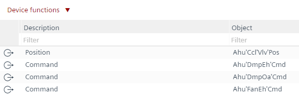

BACnet objects
这BACnet objects任务允许编辑整个自动化站的所有工程 BACnet 对象。
标准视图 | 重新设计的视图 |
|---|---|
 |
|

1 | 任务选择器 | 2 | 植物导航视图 |
3 | 工具栏 | 4 | 设备功能和过滤器 |
5 | 对象列表 | 6 | 特性 |
① Task selector
任务 | 描述 |
|---|---|
I/O 配置 | |
MODBUS | |
M总线 | |
KNX PL-Link | |
BACnet references | |
BACnet objects | |
编程 |
② Plants navigation view
这Plants导航视图显示设备的工厂层次结构和Special objects显示可报警对象的列表。
命令 | 描述 |
|---|---|
| 展开/collapse 植物文件夹结构。 |
③ Toolbar
命令 | 描述 |
|---|---|
|
状态 | 指示应用程序的状态。绿色表示应用程序在线并正在运行或暂停。
|
查看 | 检查重复名称、I/Os 数量、趋势限制等。该检查在加载设备之前自动执行。 |
（玩） | 仅当设备在线时可见。激活在线会话并加载所选设备的更改。 |
（暂停） | 仅当设备在线且在线会话启动时可见。停用活动的在线会话。 |
（令人震惊） | 出于测试目的暂时抑制所有警报。 |
④ Device functions and filters
命令 | 描述 | |
|---|---|---|
设备功能 |
设置层次描述 | 根据对象名称结构创建这些数据点的完整层次描述。例如，Ahu'FanEh'Cmd 为空气处理装置 - 排气风扇 - 命令。 INFO：可以在项目设置中更改所使用的分隔符：选择菜单Settings, 任务选择器Naming defaults, the Naming rules选项卡和Separator for hierarchical description文本字段。 要撤消所有更改，请选择 |
设置默认描述 | 对象的描述源自其部分名称。如果未从文本目录中选取零件名称，则无法更新描述。要撤消所有更改，请选择 | |
同步趋势描述和名称 | 使用趋势对象的名称和描述扩展趋势对象的名称和描述。要撤消所有更改， | |
预定义过滤器 | 使用预定义的过滤器I/Os, Network peripheral device points和BACnet references将视野限制在对象范围内。此外，column filters也可以应用。 | |
附加属性 | 用于在表中启用更多属性的选项。 | |
 Undo组件选择器中的命令。
Undo组件选择器中的命令。
⑤ Table view of the BACnet objects for Plants and Special objects
可以通过选择列对对象进行排序。通过在列标题下方输入过滤器，可以限制对象的视图。Note：当功能Set hierarchical descriptions执行后，它会影响所有对象。
Note:这Additional properties中的功能Plants视图可以显示为表视图中的列。
列标题 | 描述 |
|---|---|
|
描述 | 描述对象的名称。 |
对象名称 | 显示技术名称的完整路径，例如 Ahu'FanEh'Cmd。 |
类型 | 显示对象类型，例如，AO = 模拟输出。 |
家长 | 显示对象的父名称。 |
姓名 | 显示技术名称的最后一部分。 |
扩大 | 名称的扩展。 |
（令人震惊） | 启用 BACnet 对象的内部警报。选择True过滤具有激活报警功能的物体。 |
(（热门） | 为选定的 BACnet 对象创建趋势。选择True过滤具有激活的趋势功能的对象。 |
通知类 | 显示产生报警的对象。 |
⑥ Properties
这Properties视图显示所选元素的属性。中显示的项目Property视图取决于所选对象类型。通过选择Compact vieworBACnet view，显示的属性数量受到限制或扩展。如有必要，可以在所选视图中更改各个属性。如果需要：
- A corresponding alarm can be defined in the Alarm tab.
- A Trend log object can be created in the Trend tab.
Further information
- Assigning hierarchical descriptions for BACnet objects
- Set default descriptions
- Sync BACnet trend log description and name with trended BACnet objects
- Mass operation of properties
- Mass operation of notification classes
- Enabling an alarm on a BACnet property
- Using the new notification class for the alarm
- Creating a trendlog object
- Creating an alarm on a BACnet object
- Setting filters for BACnet objects
- Configuring list of object property references within a scheduler object
- Additional properties